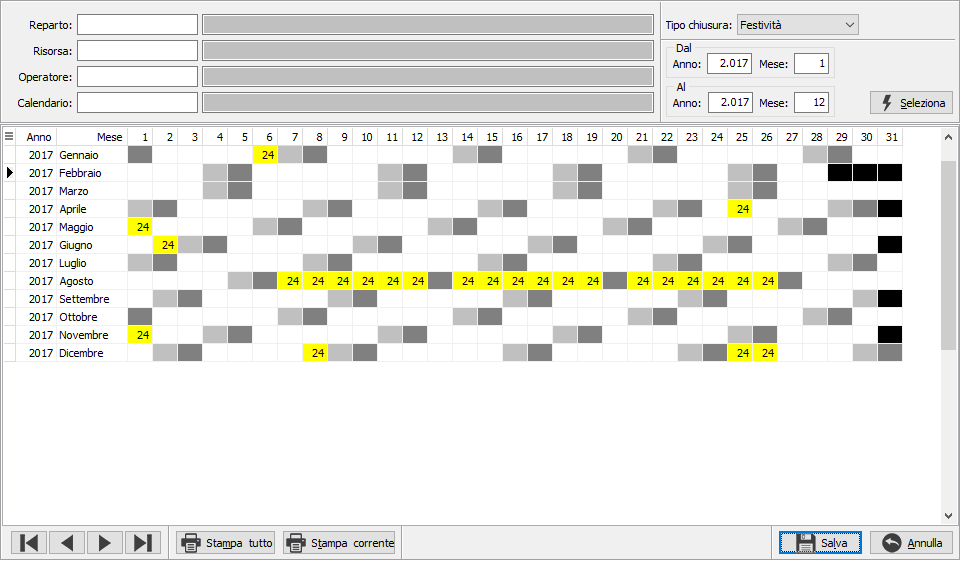

Gestione chiusure/assenze
La funzione consente la manutenzione in forma di calendario dei giorni di chiusura/assenza legati all'azienda, al calendario, al reparto, alla risorsa, all’operatore. Al momento del salvataggio registra un elemento per ogni giorno in cui è stato inserito un valore nella relativa tabella Giorni chiusure/assenze.
Ogni volta che si effettuano delle modifiche è poi necessario eseguire la procedura Generazione date periodi.

è possibile inserendo i valori nei campi reparto, risorsa, operatore, calendario o lasciando vuoti i parametri per i dati aziendali definire le ore di chiusura o di assenza in relazione al periodo inserito; la pressione del pulsante seleziona crea il calendario in cui è possibile inserire le ore; la pressione del pulsante Salva effettua la registrazione definitiva. Durante la fase di inserimento/modifica è possibile con i bottoni freccia spostarsi da un mese all'altro e con i bottoni Stampa e Stampa tutto effettuare, nel primo caso la stampa in forma grafica del periodo visualizzato, nell'altro la stampa di tutti i dati presenti in forma di elenco.